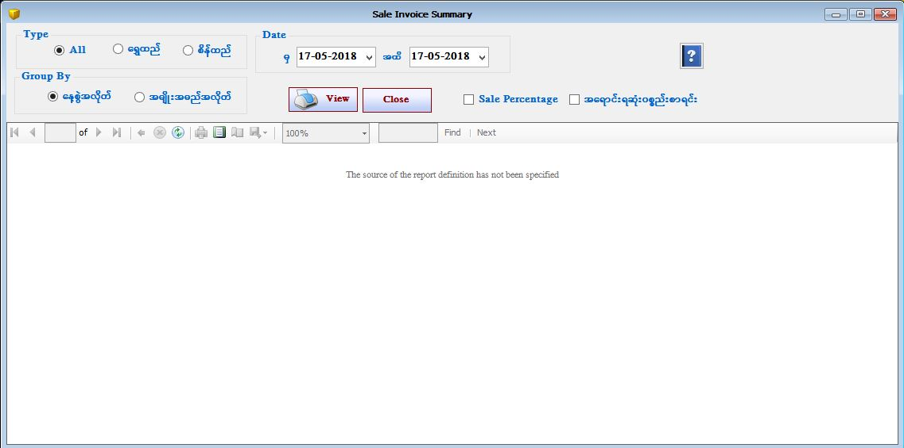

Sales Summary By Date Report

- Reports အောက်ရှိ Sales Summary By Date Form ကိုဖွင့်ပါ။
- Sales Summary By Date Form သည်ပစ္စည်းအရောင်းစာရင်းများကို နေ့စွဲ အလိုက် Summary ကြည့်ရှုနိုင်သော Form ဖြစ်သည်။
- မိမိကြည့်လိုသော နေ့စွဲ ကိုရွေးချယ်ပေးရပါမည်။ ရွေးချယ်ထားသော နေ့စွဲအတွင်းရောင်းချထားသော ပစ္စည်းအရောင်းစာရင်းများကို တွေ့ရမည် ဖြစ်သည်။ နေ့စွဲအလိုက်၊ ပစ္စည်းအမျိုးအမည် အလိုက်ရွေးချယ် ကြည့်ရှုနိုင်ပါသည်။ ByChat ကို on ထားပါက အရောင်း စာရင်း များကို Graph ပုံများဖြင့် ပြပေးမည် ဖြစ်သည်။
- Sale Percentage Check Box ကို on ထားပါက ရွေးချယ်ထားသော နေ့စွဲ အတွင်းရှိ ရက်များအတွင်းရောင်းချထားသော ပစ္စည်း များ၏စာရင်းကို တွေ့ရမည်။
- တရက်အတွင်းအရောင်းရဆုံးပစ္စည်း၊ တစ်လအတွင်းအရောင်းရဆုံးပစ္စည်းစာရင်းကို ကြည့်ချင်ပါက အရောင်းရဆုံးပစ္စည်းစာရင်း Check Box ကို on ထားပါ ။ မိမိ ကြည့်လိုသော နေ့စွဲကို ရွေးချယ်ပြီး ကြည့်ရှုနိုင်ပါသည်။
- Sales Summary By Date Form ကို အသုံးပြုပြီးပါက Close Button ကိုနှိပ်၍ ပိတ်နိုင်ပါသည်။